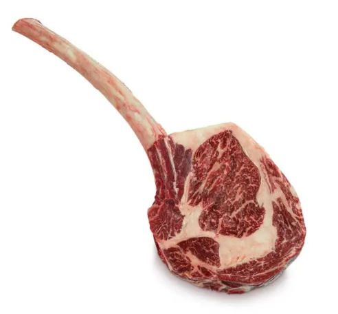

How to smoke a Tomahawk

A meal for guys who want to have the texas vibe
This massive piece of beef, cut right outta the ribs, is only real with it's handle on.
It's gonna get eaten with bare hands right out of the smoker, with no side dishes, to fully focus on it.
I can only recommend you a cold one, or if you are serious, get you some Barrique Wine to drink.
Ingredients:
- Tomahawk steak(s)
- Coarse kosher salt (for dry brining)
- Olive oil
- Texas style rub
Step by step
Dry brining:
Sprinkle the salt on top, and get the steaks into the fridge.Season them:
Just apply some olive oil onto the steaks and spread your seasoning.Smoke the steak(s) to 43°C:
This will set up the perfect conditions to reverse searing them afterwards.Fire up your grill or charcoal chimney
Reverse sear them:
Sear them until you like the colour.Take them out and let them rest for 10 minutes
Serve